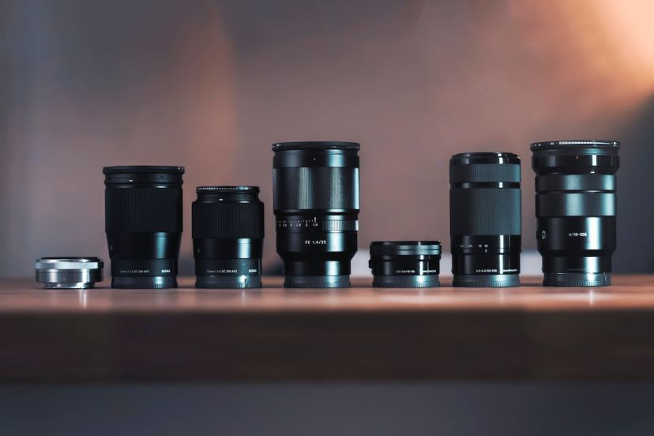

Understanding The Fundamentals of Camera Lenses
First of all, what is a Lens?
A lens is a tool used to bring light to a fixed focal point. In a film camera, the lens sends the light to the film
strip, while in a digital camera (like DSLRs or mirrorless cameras), the lens directs light to a digital sensor. Camera
lenses are made up of a series of glass plates that are convex (curved outward) or concave (curved inward).
A camera without a lens is useless to a photographer. The lens is what focuses light from what you see through the
viewfinder into a tiny, (typically) 35mm spot on the back of your film, DSLR, or mirrorless camera. If you remove the
lens from your camera, the only kind of image you can produce is white light. Consequently, a high-quality lens can help
you capture great photos even with a cheap camera, while a low-quality lens can make the best camera mediocre and the
resulting image quality, poor.
Here are the camera lens basics to help you make the right choice for your photographic needs.
Camera Lens Characteristics
All lenses filter and focus light so that it hits the sensor or film strip correctly. However, there are a variety of
other factors that determine how a camera lens affects the look and quality of the final photo.
- Focal length is the measurement of distance (in millimeters) between the point of convergence of your lens and the
sensor recording the image. The focal length range of a lens is expressed by a number, and that number tells you how
much of the scene your camera will be able to capture. Smaller numbers have a wider angle of view and show more of the
scene; larger numbers have a narrower angle of view and show less.
- Aperture is how big the opening is that lets light in, expressed in f-stops. F-stops are counterintuitive, because the
larger the number, the smaller the opening. For example, f/2.8 allows twice as much light into the camera as f4, and 16
times as much light as f11. Aperture affects the depth of field: larger openings create a shallower depth of field,
while smaller openings make more of the image in focus.
- Maximum Aperture Lenses will list a maximum aperture on the barrel, indicating the maximum width a lens aperture can
open. Typically, lenses with a wider maximum aperture cost a bit more. A lens with a wide maximum aperture is great for
low light situations, so if you are considering night photography, it might be worth the investment.
- Depth of Field Controlling the amount of the photo that is in focus is one of the photographer’s best tools to help
draw the viewer’s eye where you want it. For example, landscapes are typically shot so that everything is in focus, so
photographers will shoot at small apertures (e.g. f11 or f16). The depth of field varies with the type of lens, due to
maximum aperture.
